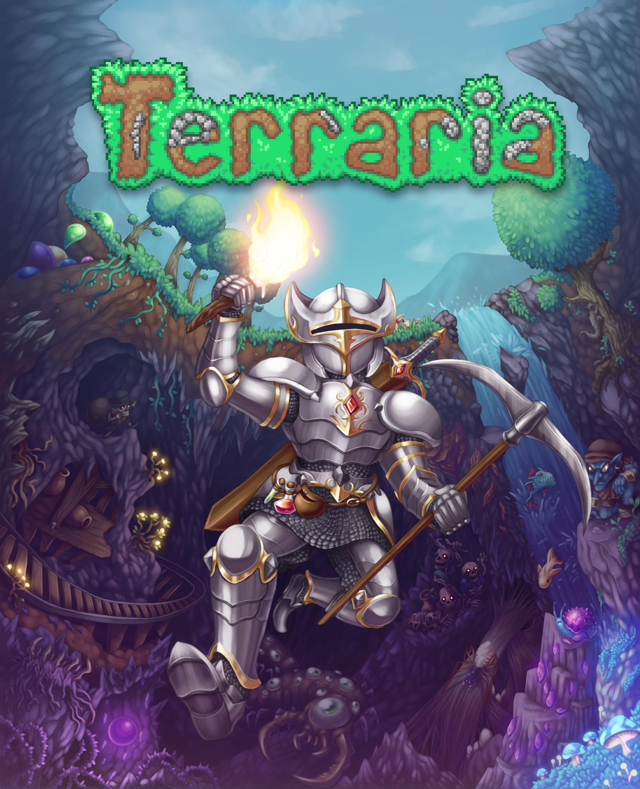

¡Cava, lucha, explora, construye! Nada es imposible en este juego de aventuras repleto de acción. El mundo es tu lienzo y la tierra misma es tu pintura. ¡Coge tus herramientas y adelante! Crea armas para deshacerte de una gran variedad de enemigos en numerosos ecosistemas. Excava profundo bajo tierra para encontrar accesorios, dinero y otras cosas muy útiles. Reúne recursos para crear todo lo que necesites y conformar así tu propio mundo. Construye una casa, un fuerte o incluso un castillo. La gente se mudará a vivir ahí e incluso quizás te vendan diferentes mercancías que te ayuden en tu viaje. Pero ten cuidado, aún te aguardan más desafíos... ¿Estás preparado para la tarea?
- Desarollador: Re-Logic
- Género(s): Acción, Aventura, Indie, Rol
- Fecha de lanzamiento inicial: 16 de marzo de 2011
- Número de jugadores permitido: multijugador
- Mantenibilidad: Si